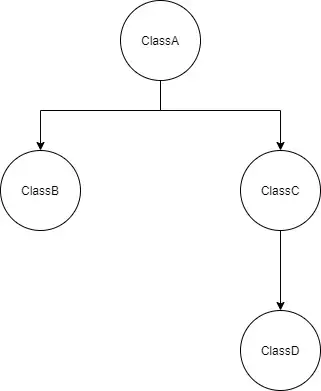

Создание многопользовательской игры с помощью libGDX — Часть 1: Настройка проекта
Статья: Making a multiplayer game with libGDX — Part 1 : Project setup
Автор: Sagnik Dutta
Перевёл: Алексей Боровиков
libGDX — это кроссплатформенная среда разработки игр на Java с открытым исходным кодом. Он довольно популярен в сообществе разработчиков игр и использовался для создания множества популярных игр. Он также имеет отличную документацию, что упрощает его изучение, если у вас есть некоторый опыт разработки.
В то время как игровые движки, такие как Unity или Unreal Engine, просты в освоении и отлично подходят для быстрой разработки, если вы похожи на меня и просто хотите сделать шаг назад и погрузиться в мельчайшие детали, эти движки абстрагируются от вас, или вы просто хотите отшлифовать свои навыки ООП или Java, я бы настоятельно рекомендовал вам попробовать libGDX.
В этой серии я собираюсь познакомить вас с процессом создания простой многопользовательской игры с использованием libGDX. Цель состоит в том, чтобы понять различные задействованные концепции и настроить рабочий процесс, который вы затем сможете расширить и применить к своим собственным играм. В этой статье мы сосредоточимся на настройке нашего приложения, добавив все зависимости. Я также буду объяснять функцию каждой из этих зависимостей в нашем проекте.
Однако я хотел бы подчеркнуть, что эта серия не рекомендуется для тех, кто совершенно новичок в программировании. Я собираюсь предположить, что у вас есть некоторый предыдущий опыт разработки программного обеспечения и вы знакомы с концепциями ООП.
Давайте начнем!
Необходимые компоненты
- 1. Java 8 или выше (https://adoptopenjdk.net/);
- 2. Node.js 14 или выше (https://nodejs.org/);
- 3. IDE или текстовый редактор по вашему выбору. Лично я предпочитаю использовать IntelliJ для работы на Java и Sublime Text 3 для Node.js;
- 4. Базовое понимание программирования на Java и Nodejs (javascript).
Вот и все! Это все, что вам нужно, чтобы следовать дальше.
Установка
Итак, чтобы начать, нам нужно следовать инструкциям в https://libgdx.com/dev/ и сгенерируйте проект libGDX с помощью генератора проектов. Как только это будет сделано, продолжайте и откройте проект в любой среде разработки по вашему выбору.
Если вы заглянете в корневой каталог вашего проекта, вы найдете файл с именем build.gradle. Откройте его и прокрутите вправо до нижней части файла, и вы должны увидеть блок, подобный этому.
project(":core") {apply plugin: "java-library"dependencies {api "com.badlogicgames.gdx:gdx:$gdxVersion"api "com.badlogicgames.gdx:gdx-box2d:$gdxVersion"}}
Мы собираемся добавить здесь еще несколько зависимостей, окончательная версия должна выглядеть следующим образом.
project(":core") {apply plugin: "java-library"dependencies {api "com.badlogicgames.gdx:gdx:$gdxVersion"api "com.badlogicgames.gdx:gdx-box2d:$gdxVersion"compileOnly "org.projectlombok:lombok:1.18.20"annotationProcessor "org.projectlombok:lombok:1.18.20"implementation "com.google.dagger:dagger:2.35.1"annotationProcessor "com.google.dagger:dagger-compiler:2.35.1"api "io.socket:socket.io-client:2.0.0"}}
Не волнуйтесь, я немного объясню функцию каждой из этих зависимостей, но пока это все, что нам нужно сделать в нашем Java-проекте.
Далее создайте отдельный каталог. Здесь мы собираемся создать наш игровой сервер с помощью nodejs. Откройте терминал и выполните следующую команду
npm init
Это запустит мастер, в котором вы сможете ввести название вашего приложения, описание, лицензию и т.д. Введите любое имя и просто оставьте все остальное по умолчанию на данный момент (вы всегда можете отредактировать это позже). Это создаст файл с именем package.json.
npm install --save expressnpm install --save socket.io
Это позволит загрузить и установить экспресс и socket.io . Это единственные две зависимости, которые нам нужны на нашем сервере.
Вот и все! Мы закончили с настройкой!
Зависимости
В этом разделе я расскажу вам о зависимостях, которые мы добавили в наш проект, и их функциях. Зависимости, которые мы включили, - это Ломбок, Кинжал, Socket.io (клиент в проекте Java и сервер в проекте Nodejs) и Express. Я пропущу объяснение для Express, поскольку он настолько популярен, что является почти синонимом любого сервера Nodejs. Если вы хотите сразу погрузиться в создание игры, вы можете пропустить этот раздел, хотя я бы рекомендовал делать это только в том случае, если вы уже знакомы со всем этим.
Теперь, когда с этим покончено, давайте взглянем на наши зависимости одну за другой.
- 1. Lombok
Lombok - это библиотека, которая автоматически генерирует код котельной плиты, который в противном случае нам пришлось бы добавлять вручную. Это делается путем аннотирования наших классов и полей аннотациями Lombok. Это особенно полезно при определении POJOs. Например, если бы мы сделали это обычным способом с конструкторами, геттерами и сеттерами, у нас было бы что-то вроде этого.
public class ExamplePojo {private int field1;private Boolean field2;public ExamplePojo(int field1, Boolean field2) {this.field1 = field1;this.field2 = field2;}public int getField1() {return field1;}public Boolean getField2() {return field2;}public void setField1(int field1) {this.field1 = field1;}public void setField2(Boolean field2) {this.field2 = field2;}}
Однако, если мы используем Lombok, эквивалентный код будет выглядеть следующим образом
import lombok.AllArgsConstructor;import lombok.Data;@Data@AllArgsConstructorpublic class ExamplePojo {private int field1;private Boolean field2;}
Все средства получения, настройки и конструкторы по-прежнему генерируются при компиляции этого кода (возможно, вам потребуется настроить вашу среду разработки, чтобы разрешить обработку аннотаций для отражения изменений в среде разработки). Как вы можете видеть, это значительно улучшает читаемость, поскольку удаляется весь отвлекающий шаблонный код. В библиотеке Lombok есть много аннотаций, и они позволяют вам точно настроить генерацию кода по своему вкусу.
Лично мне нравится использовать аннотации @Builder и @Value, поскольку я обычно стараюсь сделать свои POJOs неизменяемыми, а шаблон builder значительно улучшает читаемость кода.
Мы можем добавить Lombok в проект gradle, включив следующие зависимости
compileOnly "org.projectlombok:lombok:1.18.20"annotationProcessor "org.projectlombok:lombok:1.18.20"
- 2. Dagger
Dagger - это фреймворк для внедрения зависимостей во время компиляции, который может автоматически вводить зависимости и создавать объекты для нас. Например, давайте предположим, что классы в нашем проекте имеют график зависимостей, подобный этому.

Таким образом, наш java-код будет выглядеть примерно так
class ClassA {private ClassB classB;private ClassC classC;public ClassA(ClassB classB, ClassC classC) {this.classB = classB;this.classC = classC;}}class ClassB {public ClassB() {}}class ClassC {private ClassD classD;public ClassC(ClassD classD) {this.classD = classD;}}class ClassD {public ClassD() {}}public class Main {public static void main(String[] args) {ClassA classA = new ClassA(new ClassB(), new ClassC(new ClassD()));}}
Видите этот метод main()? Чтобы создать объект ClassA, нам пришлось создать экземпляр каждого отдельного объекта в его дереве зависимостей. Вы можете видеть, как это может стать очень громоздким, когда у вас есть проект с сотнями классов.
Вот тут-то и пригодится Кинжал. Dagger может автоматически проверять дерево зависимостей и генерировать код для внедрения необходимых нам объектов. Все, что нам нужно сделать, это аннотировать конструкторы классов в дереве зависимостей с помощью @javax.inject.Введите, который является стандартной аннотацией java, и создайте компонент Dagger для предоставления интересующего нас класса. Мы даже можем сделать наши классы одноэлементными, аннотируя их с помощью @javax.inject.Синглтон. Итак, наш измененный код будет выглядеть следующим образом.
import dagger.Component;import javax.inject.Inject;import javax.inject.Singleton;@Singletonclass ClassA {private ClassB classB;private ClassC classC;@Injectpublic ClassA(ClassB classB, ClassC classC) {this.classB = classB;this.classC = classC;}}@Singletonclass ClassB {@Injectpublic ClassB() {}}@Singletonclass ClassC {private ClassD classD;@Injectpublic ClassC(ClassD classD) {this.classD = classD;}}@Singletonclass ClassD {@Injectpublic ClassD() {}}@Singleton@Componentinterface AppComponent {ClassA getClassA();}public class Main {public static void main(String[] args) {AppComponent appComponent = DaggerAppComponent.create();ClassA classA = appComponent.getClassA();}}
Видите теперь метод main()? Мы можем напрямую извлечь экземпляр ClassA, используя интерфейс AppComponent, который мы аннотировали с помощью @Component, и Dagger позаботится обо всем внедрении зависимостей за нас. Вы заметите, что мы имеем в виду класс с именем DaggerAppComponent, этот класс будет сгенерирован dagger при компиляции вашего кода, и у него будет то же имя, что и у интерфейса вашего компонента, с префиксом ‘Dagger’. В случае, если у вас есть ваши компоненты в отдельном пакете (что, скорее всего, будет в реальном приложении), сгенерированный класс компонента будет присутствовать в том же пакете, что и интерфейс компонента.The text size exceeds the maximum.
Пример, который мы видели, был случаем, когда Dagger автоматически вводил все наши зависимости для нас. У нас также есть возможность контролировать, какие зависимости используются с помощью модулей dagger, но мы разберемся с этим, когда начнем создавать нашу игру.
Мы можем добавить dagger в проект gradle, добавив следующие зависимости
implementation "com.google.dagger:dagger:2.35.1"annotationProcessor "com.google.dagger:dagger-compiler:2.35.1"
- 3. Socket.io
Разъем.io - это библиотека, которая действует как оболочка поверх Websockets. Основное различие между связью websocket и стандартным http заключается в том, что запросы в http являются однонаправленными (клиент отправляет запросы серверу, на который сервер отвечает), тогда как Websockets являются двунаправленными (как сервер, так и клиент могут отправлять запросы друг другу).
Это особенно полезно для нашего варианта использования при создании многопользовательской игры, потому что каждый игрок также должен быть осведомлен о действиях другого игрока. Способ, которым мы могли бы достичь этого с помощью http, - это использовать длительный опрос. Однако это привело бы к большому количеству обращений к серверу, особенно если мы хотим обновлять наше представление в режиме реального времени.
Используя socket.io , мы можем заставить сервер отправлять сообщения каждому клиенту всякий раз, когда изменяется состояние сервера, что означает, что клиентам не нужно продолжать опрашивать сервер и они могут просто реагировать на события, отправляемые сервером.
Однако это создает некоторые проблемы с libGDX, поскольку все рендеринги экрана выполняются основным потоком, в то время как прослушиватели сокетов будут выполняться в других асинхронных потоках. В следующей части этой серии мы рассмотрим, как мы можем решить эту проблему и при этом сохранить модульность нашего кода.